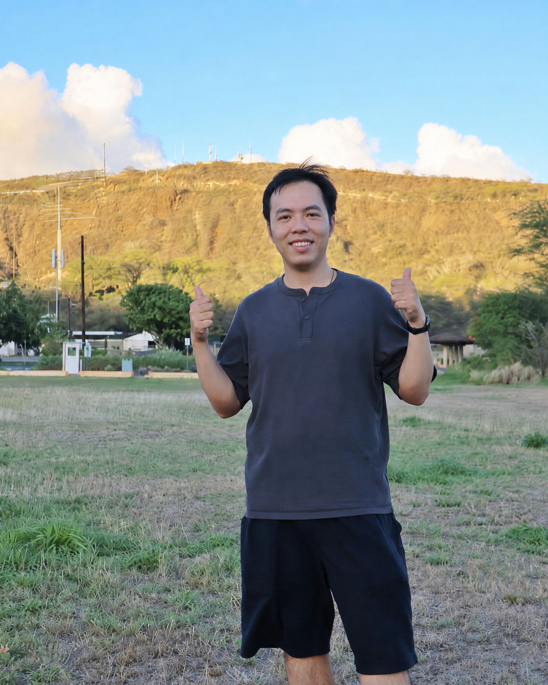

Yiyu Zhuang 庄义昱
Assistant Researcher 特任助理研究员
Nanjing University · School of Intelligence Science and Technology 南京大学 · 智能科学与技术学院
Exploring human-centered spatial intelligence and embodied intelligence through 3D vision, generative models, and physiological signals. 聚焦以人为中心的空间智能与具身智能，探索三维视觉、生成模型与生理信号驱动的智能交互。
Email: zhuangyiyu@nju.edu.cn
Biography 个人简介
I am currently an Assistant Researcher at the School of Intelligence Science and Technology, Nanjing University, and a member of the NJU-3DV Lab and the CITE Lab.
I received my B.Eng. in Communication Engineering from Hunan University in 2020 and my Ph.D. in Information and Communication Engineering from Nanjing University in 2026, under the supervision of Prof. Xun Cao. From 2022 to 2024, I conducted research on 3D reconstruction and generation at Tencent AI Lab and the Hunyuan team.
I have published 14 papers at CVPR, ICCV, ECCV, SIGGRAPH Asia, AAAI, and related journals. Feel free to get in touch!
现任南京大学智能科学与技术学院特任助理研究员，也是南京大学三维视觉实验室（NJU-3DV）和成像与智能技术实验室（CITE）成员。
于2020年本科毕业于湖南大学通信工程专业，2026年博士毕业于南京大学信息与通信工程专业（导师：曹汛教授）。2022—2024年曾在腾讯 AI Lab 与混元大模型团队开展三维重建与生成算法研究。
目前已在 CVPR、ICCV、ECCV、SIGGRAPH Asia、AAAI 等国际会议及期刊发表论文14篇。欢迎交流！
Industry Experience
- 2022 — 2024 · Tencent AI Lab & Hunyuan, research on 3D reconstruction and generation algorithms
- 2020 · vivo Imaging Algorithm Research Team, ISP image algorithm design
Selected Awards
- 2025 · National First Prize, “Challenge Cup” National College Student Academic Science and Technology Works Competition
- 2025 · National Silver Award, China International College Students’ Innovation Competition
- 2018 · Outstanding Paper Award & National First Prize, Contemporary Undergraduate Mathematical Contest in Modeling
实习经历
- 2022 — 2024 · 腾讯 AI Lab 与混元大模型团队，3D重建和生成算法研究
- 2020 · vivo 影像算法预研团队，ISP图像算法设计
部分获奖情况
- 2025 · “挑战杯”全国大学生课外学术科技作品竞赛全国一等奖
- 2025 · “中国国际大学生创新大赛”国赛银奖
- 2018 · 全国大学生数学建模竞赛优秀论文奖 & 全国一等奖
Research 研究方向
My research focuses on human-centered spatial intelligence and embodied intelligence, with an emphasis on 3D/4D scene modeling, 3D digital humans, and human–robot interaction.
I aim to build intelligent systems that understand human intent and the surrounding spatial environment. By combining 3D vision and generative models, I study perceptive, predictive, and interactive world models. I also explore physiological signals, including brain–computer interfaces, to infer human action intentions and cognitive states, enabling more natural and controllable interactions with digital humans and robots.
My long-term goal is to connect human neural intent, spatial world models, and embodied agents, making interaction with digital environments and physical robots more natural, precise, and controllable.
我的研究聚焦于以人为中心的空间智能与具身智能，主要研究三维/四维场景建模、三维数字人与机器人交互。
我希望构建能够理解人类意图与外部空间环境的智能系统：利用三维视觉和生成模型建立可感知、可预测和可交互的世界模型，并结合脑机接口等生理信号理解用户的动作意图和认知状态，进一步支持数字人或机器的驱动和控制。
我的长期研究目标是连接人类神经意图、空间世界模型与具身智能体，使人与数字世界及物理机器人之间的交互更加自然、准确和可控。
Prospective Students 招生信息
Let’s explore meaningful research together. 欢迎一起探索有价值的研究问题。
I welcome students interested in spatial intelligence, embodied interaction, brain–computer intelligence, and related interdisciplinary areas to get in touch. 欢迎对空间智能、具身交互、脑机智能及相关交叉方向感兴趣的同学联系交流。
Mentoring 科研与培养方式
As an early-career faculty member, I remain closely engaged with research, coding, and paper writing. I aim to communicate frequently with each student and provide hands-on guidance in topic selection, implementation, experiments, and writing. 作为青年教师，我目前仍保持在科研、代码和论文一线，希望针对每位同学的基础和兴趣进行较高频率的交流，在选题、代码、实验和写作等环节提供具体指导。
We value research quality while respecting the pace of academic growth. Curiosity, initiative, execution, responsibility, and persistence matter more than having prior publications. 我们重视研究质量，也尊重科研成长规律。相比一开始是否已有论文，我更看重好奇心、自驱力、执行力、责任感，以及面对困难时持续推进的能力。
What We Value 申请要求
- Interest in spatial intelligence, embodied AI, 3D vision, brain–computer interfaces, or multimodal learning.
- A foundation in Python, PyTorch, mathematics, or signal processing.
- Commitment to sustained research and proactive communication.
- Experience in computer vision, deep learning, EEG analysis, or robotics is a plus.
- 对空间智能、具身智能、三维视觉、脑机接口或多模态学习感兴趣；
- 具备 Python、PyTorch、数学或信号处理等基础；
- 愿意持续投入科研，并主动沟通研究进展；
- 有计算机视觉、深度学习、脑电分析或机器人相关经验者优先。
Students from computer science, AI, automation, biomedical engineering, communications, and related disciplines are welcome. Learning ability, research interest, and execution matter more than a specific major. 欢迎计算机、人工智能、自动化、生物医学工程、通信工程等相关专业的同学联系。专业背景不是唯一标准，学习能力、科研兴趣和执行力更加重要。
How to Apply 申请方式
Please email your CV, a brief self-introduction, your research interests, and the date you can begin participating in research. 请将个人简历、简短自我介绍、感兴趣的研究方向和可以开始参与科研的时间发送至：
zhuangyiyu@nju.edu.cnSubject: Application Type — University — Name — Research Interest 邮件标题：申请类型—学校—姓名—研究方向